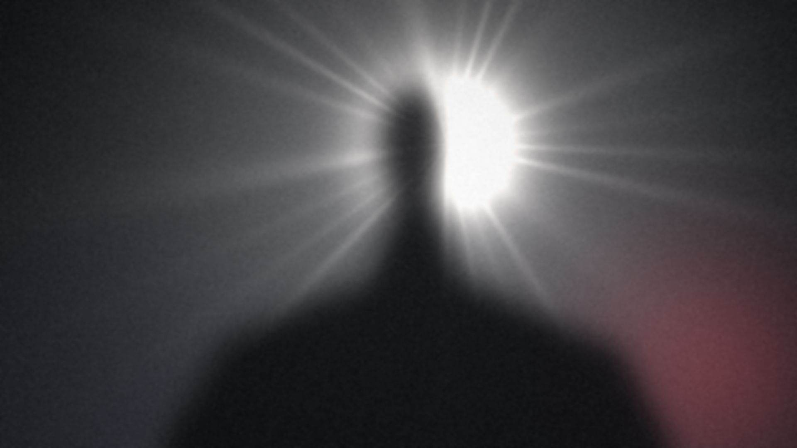
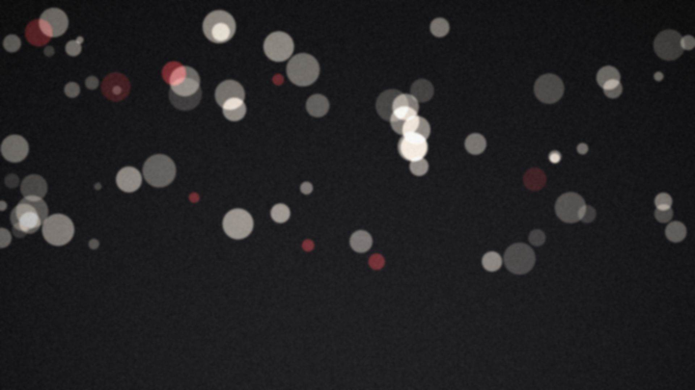
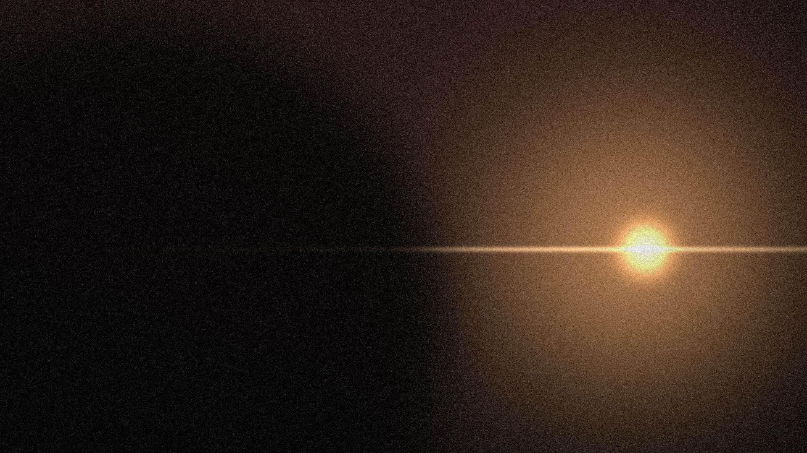
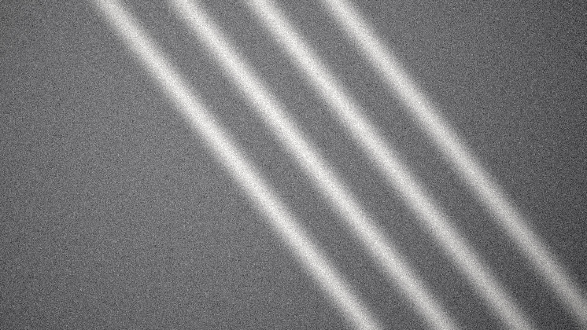
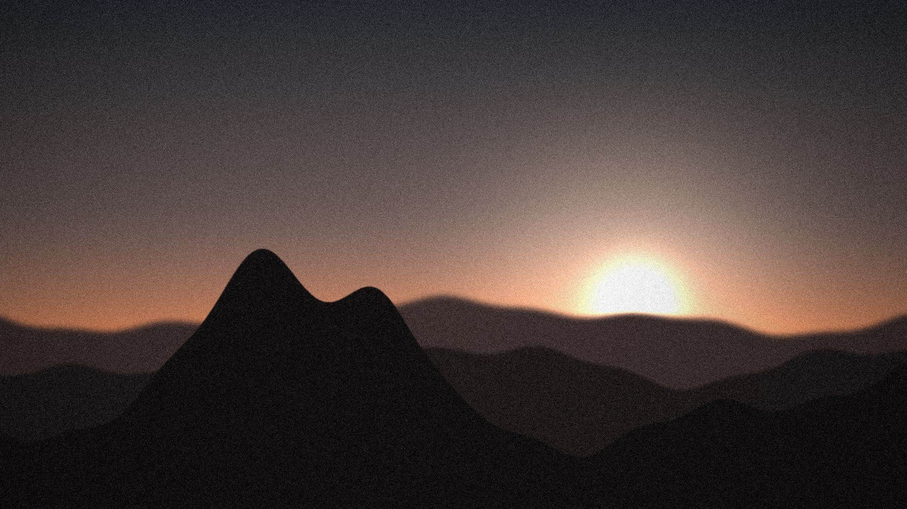
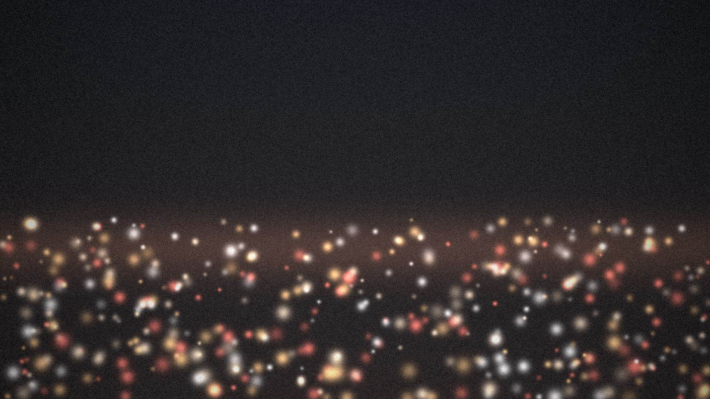

Feito para ser visto
Produtora audiovisual em Londrina

Toda produção começa com uma pergunta: o que esta história precisa para ser vista? A resposta está no roteiro, na luz, no corte e na hora certa de ir ao ar.
A UTV trabalha no ritmo da televisão. Prazo é prazo, o ao vivo não tem segunda chance e cada quadro precisa funcionar na primeira vez que alguém o vê.
Do institucional ao documentário, da campanha à transmissão ao vivo, o cuidado é o mesmo: direção atenta, imagem bem tratada e uma equipe que acompanha o projeto do primeiro rascunho à entrega. [Complete com a história real da UTV.]

UTV em movimento
Portfólio
Da ideia à tela
Uma equipe só, do primeiro rascunho à exibição, para o projeto não se perder entre fornecedores.
Pré-produção
Antes de ligar a câmera: roteiro, direção de arte, escolha de locações e um plano de filmagem que cabe no prazo.
Produção
No set e no estúdio: captação, iluminação, áudio direto, gravação com várias câmeras e transmissão ao vivo.
Pós-produção
Na ilha de edição: montagem, correção de cor, motion graphics, trilha e mixagem, até a versão que vai ao ar.

O canal que nunca sai do ar
Programação própria, reprises e acervo, 24 horas por dia, na TV e no YouTube.
Assistir ao vivoBastidores
Como os projetos acontecem, do set à ilha de edição.




Olhar de televisão, acabamento de cinema
[História da UTV em 2 ou 3 frases: ano de fundação, trajetória e o que diferencia a produtora.]
Desde [ano], [nº] projetos entregues e um canal no ar 24 horas por dia.
Quem já filmou com a UTV
- UniFil
- Colégio Londrinense
- [Cliente]
- [Cliente]
- [Cliente]
- [Cliente]
- [Cliente]
- [Cliente]
Vamos produzir juntos
- Produção
- UTV Produtora
- Cena
- 01
- Take
- 01
- Data
- [data]
- (43) [número]
- [email@utv.com.br]
- @[perfil]